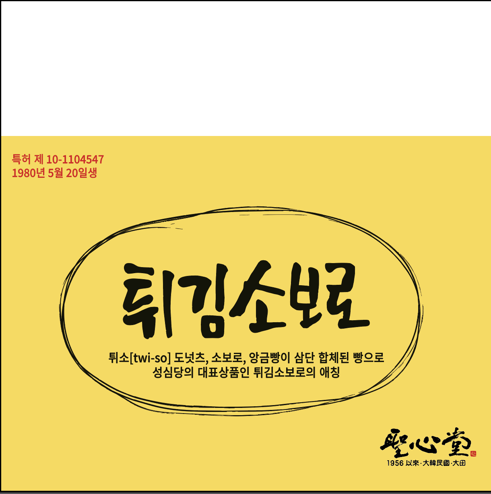

— PROJECT
SungSimDang Bakery
Packaging Redesign
— ROLE
Product Designer
User Research
Prototyping
— LOCATION
KAIST University (Daejeon, South Korea)
— ORIGINAL
(Before Redesign)
During my semester studying abroad at KAIST in South Korea, I had the opportunity to collaborate in a group project with SungSimDang, Daejeon's most famous bakery. Their signature "Fried Soboro" is incredibly popular, selling over 40,000 units a day and frequently selling out before closing. Many people travel across provinces to purchase this pastry.
With such high volume, our group focused on package design to address a critical recycling mistake. Through user testing, we discovered that customers were incorrectly sorting the packaging into paper recycling. However, because the product is oily, the wrapper actually belongs in general waste.
Our initiative redesigned the packaging to intuitively guide users toward proper disposal without taking away the fun of the brand's natural aesthetic. Our project was approved out of all 5 cohorts, and begun mass printing with the updated design.
- Minseo Lim
- Minsu Kim
- Sihyun Park
- Hyerin Na
- Kyona Joseph
Phase 1: Research & Process
Below is the full process deck of our initial research, problem identification, and ideation phases.
Physical Re-enactment
We acted out the user's journey physically to identify pain points that aren't obvious on paper, specifically of how the user interacts with the product from first sight to after purchasing.

User Journey Map
In this User Journey Map, it depicts the full journey of the user to determine how the consumer will dispose of the product, from the consumers perspective and the employee's.
Scroll right to view the details →

Phase 2: Design Evolution
This shows the various designs each of the members of the group produced to begin the selection process. In Korean, we all added specific elements on how to capture the consumers sight when consuming the product to ensure proper disposal.
Translations Include: "Recycling, A Piece of Bread", "Please throw away oil stained garbage", "Q&A : Where should the packaging be properly disposed?"
Scroll right to view the details →

Phase 3: The Final Winning Product

Approved Design: The finalized graphic layout ready for production. (With English Translation.)

Mass Production: Mass Printing of the product being distributed with an added bread graphic.
Final Presentation
After my time abroad I returned to New York University, where I was updated by the members of the group of the success of the project. They presented in a board meeting of our final design in my absense.